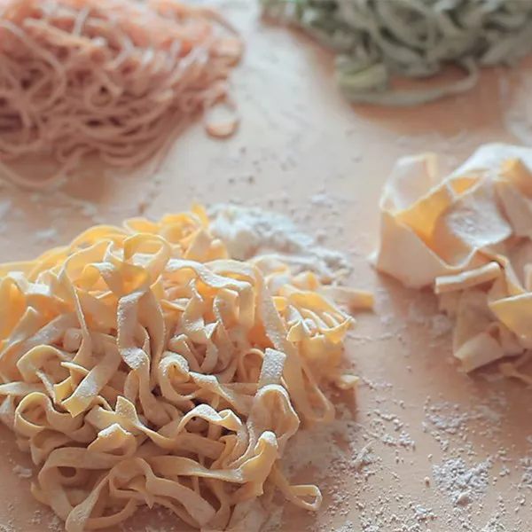

Pastas

Pastas are undoubtedly the most consumed food in the world
But can you really cook them how they deserve to be? This recipe will help you unleash all the potential of your pastas!
List of ingredients:
To make delicious pastas you will need:
- fresh pastas
- Salt
- Sour cream
- Bacon
Here is the list of steps to follow:
- Put 1.5L of water in a saucepan
- Salt it 'till it has the tast of tears
- Wait for them to boil
- Add your pastas
- Withdraw the water from the saucepan
- Add sour cream, cheese and mix everything together
- Enjoy!